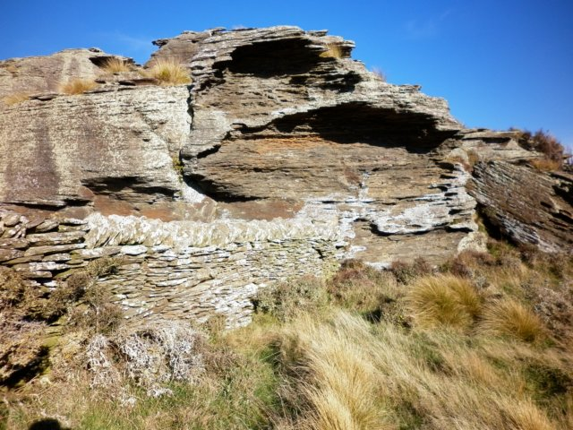
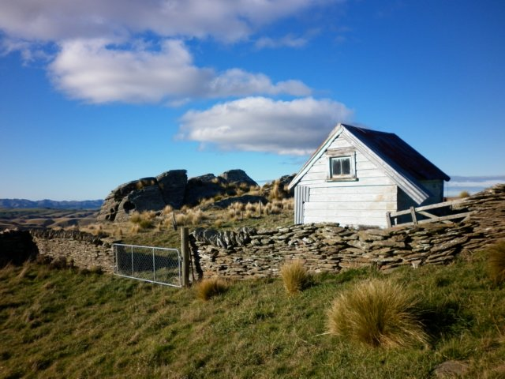
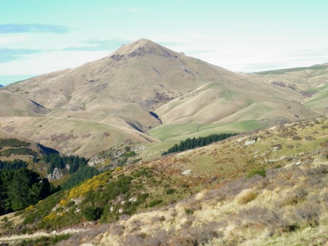

The 2016 New Zealand Rogaine Championships were held over the weekend of 27th and 28th February based at the El Dorado woolshed inland from Waikouaiti, North Otago.
Fine hot weather farewelled the 38 teams of 93 competitors as they departed at midday for the 24 hour championship event.
Twenty teams of 58 competitors also competed in a shorter seven hour non-championship event.
It was immediately apparent that the promise of big country and steep incised gullies would be fulfilled. One thing that hadn't been anticipated was the high tussock in some parts of the course which made travelling slower than expected in places. What made the exertion worthwhile were spectacular views inland and out to sea on the east coast.
The terrain was open apart from a few controls in the plantation at the east of the map. The impenetrable scrub that filled some gullies was mainly easily avoided. However careful planning and route choice was necessary to try to avoid steep climbs into and out of gullies.
Overnight cooler but mild conditions prevailed. The blood red moon was at times clouded over but spectacular when visible. Dawn greeted competitors with another fine day as the mercury rose again.
A lot of effort goes into planning and organizing an event like this. Many thanks go out to all those people who gave freely of their time to do this. Also to the many land-owners who gave permission for the event to be run on their land and for sharing their office. Thanks too to the caterers who provided warm food and encouragement overnight and the satisfying meal after the event.

